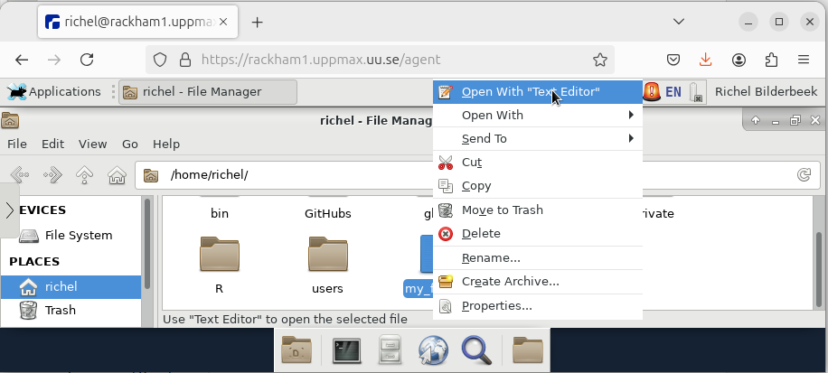
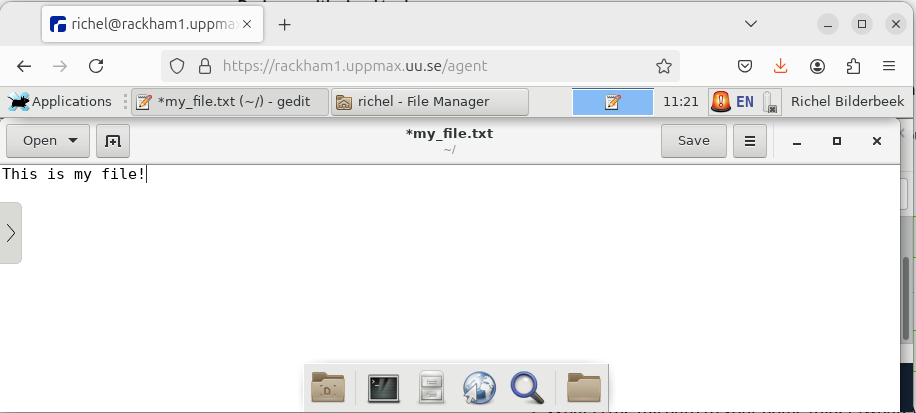
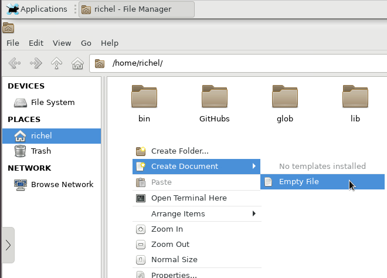

Use the remote desktop environment¶
Learning outcomes
- Practice using the UPPMAX documentation
- Can copy-paste text between local computer and the remote desktop (in both directions)
- Can start a terminal
- Can navigate the file system
- Can find the wharf
- Extra: Can find the name of the file explorer
- Extra: Can do basic file management: create, copy, move and delete a file and folder
- Extra: Can start a visual text editor
- Extra: Can find the name of the visual text editor
- Extra: Can do basic things in the visual text editor: edit, save, close
For teachers
Teaching goals are:
- Learners have copy-pasted text between local computer and the remote desktop (in both directions)
- Learners have used Thunar
- Learners have found out that the file explorer is called Thunar
- Learners have started a terminal
- Extra: Learners have done basic file management: create, copy, move and delete a file and folder
- Extra: Learners have started
gedit - Extra: Learners have found that the text editor is called gedit
- Extra: Learners have done basic things in gedit: edit a files, save, close
Lesson plan:
gantt
title Using the remote desktop
dateFormat X
axisFormat %s
section First hour
Prior : prior, 0, 5s
Present: present, after prior, 2s
%% It took me 5 mins, here I do that time x2
Challenge: crit, challenge, after present, 10s
%% Here I use the same time it took me to give feedback
Feedback: feedback, after challenge, 5sPrior questions:
- Do you expect it to be hard to use a remote desktop environment?
- Do you expect there to be much different behavior when using a remote desktop environment?
- Does someone have already tried to copy-past text between local computer and remote desktop?
- Can you already name some folders that are special, either for Linux or on Bianca?
Why?¶
After logging in to the remote desktop, we can work with Bianca. Let's make sure we can do so :-)
Here we start to feel at ease using the remote desktop environment. Most exercises (e.g. creating a file) will be intuitive to do.
The goal is to make sure you can indeed do all these 'simple' things, as maybe you'll be too afraid to ask a colleague later.
Exercises¶
Need a video?
Here is a video that shows the solution of these exercises
It is assumed you are logged in to the remote desktop environment of Bianca.
flowchart TD
classDef minimal_node fill:#fdd,color:#000,stroke:#f00
classDef extra_node fill:#ffd,color:#000,stroke:#ff0
exercise_1[1.copy-paste text]:::minimal_node
exercise_2[2.starting a terminal]:::minimal_node
exercise_3[3.file navigation, can find wharf]:::minimal_node
exercise_4[4.starting a text editor]:::extra_node
exercise_5[5.file management]:::extra_node
exercise_1 --> exercise_2 --> exercise_3 --> exercise_4 --> exercise_5Exercises for this session. Red nodes: minimal, needed in other sessions. Yellow nodes: extra, useful in general.
For the extra exercises: no need to read the documentation here, these are mostly finding out where to click.
Exercise 1: copy-paste text¶
Go to the UPPMAX documentation at https://docs.uppmax.uu.se, then answer these questions:
- Find the page where it is documented to log in to Bianca's remote desktop via a webbrowser.
Answer
The page is here.
- On that page, find where to find information on how to use the remote desktop
Answer
The link can be found at the 'Usage' heading, which takes you to ThinLinc, the program that is the workhorse behind the website
- Copy-paste text from local computer to your remote desktop
Answer
Select some text on your local computer and press CTRL + C to copy
it to your loal clipboard.
Then, click on the menu bar on the left side of the window and click on the
clipboard icon. Press CTRL + V to paste the text from your local
clipboard to the remote desktop's clipboard

Then, in the remote desktop environment, press CTRL + V to paste
the text from the remote desktop's clipboard to a text editor

-
Copy-paste text from your remote desktop to your local computer
In the remote desktop environment, press
CTRL + Cto copy the selected text to the remote desktop's clipboard.Then, click on the menu bar on the left side of the window and click on the clipboard icon. Copy the text in the remote desktop's clipboard using
CTRL + Cto your local computer's clipboard.Then, on your local computer, press
CTRL + Vto paste the text from your clipboard to a text editor
Exercise 2: starting a terminal¶
- Start a terminal
Answer
At the bottom bar of the screen, click the icon for 'Terminal emulator':
You now have started a terminal:

- Close the terminal. There are multiple ways!
Answer
These are some of the more conventional ways to close a terminal:
- Click on the
xat the top-right of the terminal. When asked to really do it, say 'Yes' - Click the terminal and Press
CTRL + Cto stopxeyes. Typeexitand press enter - Many more: any solution that worked is fine
Exercise 3: file navigation¶
- Start a program to navigate your files
Answer

At the bar at the bottom of the screen, click on the rightmost folder icon to open the file explorer. You will be asked in which folder to open it (giving away the answer to the next question). Pick any.
- When you start that program, in which directory are you?
Answer
When you started the file explorer, you already had to pick a folder, giving away the answer to this question.
In the file explorer, you can read the directory in the top bar.
For the image above, the directory is called /home/richel.
- What is the full path to your home folder (whatever a 'home folder' is)?
Answer
When you started the file explorer, pick the top option 'Open folder' to open up your home folder.
It's full path is /home/[your UPPMAX username], where [your UPPMAX username]
is your UPPMAX username.
For the image above, the username was richel and hence the home directory
is called /home/richel.
Your project folder is an important folder:
it is the folder where you run your project in.
It can be found at /proj/[project_code],
where [project_code] is the project code.
- Navigate to the project folder of this course
Don't know the project code?
In our case, the project code is sens2023598,
hence the project folder is /proj/sens2023598.
The wharf is an important folder: it is the only folder where files
can be transferred to/from.
- Navigate to the wharf folder of the project of this course
Cannot find it?
Still cannot find it?
It is at /proj/nobackup/[project_id]/wharf/[user_name]/[user_name]-[project_id],
hence, /proj/nobackup/sens2023598/wharf/[user_name]/[user_name]-sens2023598,
or, for a user with username sven, at
/proj/nobackup/sens2023598/wharf/sven/sven-sens2023598
To be able to search the web for questions on this file explorer, its name will be useful to know:
- What is the name of the file explorer?
Answer
In the file explorer, click on Help | About:

It shows the name of the file explorer:

The file navigator is called Thunar.
Extra: Exercise 4: starting a text editor¶
- Create a file called
my_file.txt(the.txtat the end is important), if not already present - Edit a file by start a visual text editor from Thunar. There are many ways!
Answer
Here there are multiple ways:
- Double-click the file. Because the file ends with
.txtit will open a visual text editor

- Do a right-mouse button click on the file and select 'Open with text editor'
It will look similar to this:

To be able to search the web for questions on this graphical text editor, its name will be useful to know:
- What is the name of the graphical text editor?
Answer
The visual text editor is called 'gedit'.
You can see its name in the menu bar at the top:
You can also click on the hamburger button and click 'Help':

This will show you the gedit about screen:

- Save the file. There are multiple ways!
Answer
There are multiple ways, these are among the most conventional:
- Press
CTRL + S - Click on the 'Save' button at the top menu bar of gedit
- Close gedit. There are multiple ways!
Answer
These are some of the more conventional ways to close gedit:
- Click on the
xat the top-right of the terminal - In the gedit hamburger menu, click 'Quit'

Extra: Exercise 5: file management¶
In Thunar:
- create a file
Answer
In Thunar, click on the white space next/under the files with the right mouse button. In this pop-up menu, click 'Create a new file':

In the following dialog, give it any filename:

Now the file is created:

- copy a file
- move a file
- delete a file
- create a folder
- copy a folder
- move a folder
- delete a folder